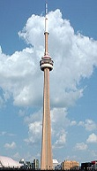

Бурдж-Халифа в Дубае, ОАЭ

Небоскрёб высотой 828 метров, самое высокое сооружение в мире. Форма здания напоминает сталагмит.
…Токийское небесное дерево, Япония
Телевизионная башня в районе Сумида самая высокая среди телебашен мира. Высота телебашни вместе с антенной составляет 634 метра.
…CN Tower, Канада

Си-Эн Тауэр — самое высокое свободно стоящее сооружение в мире с 1976 по 2007 год. Его высота составляет 553,33 метра.
…